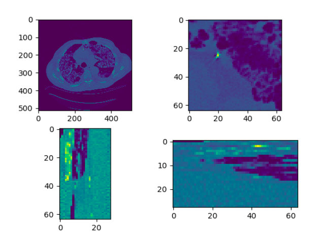
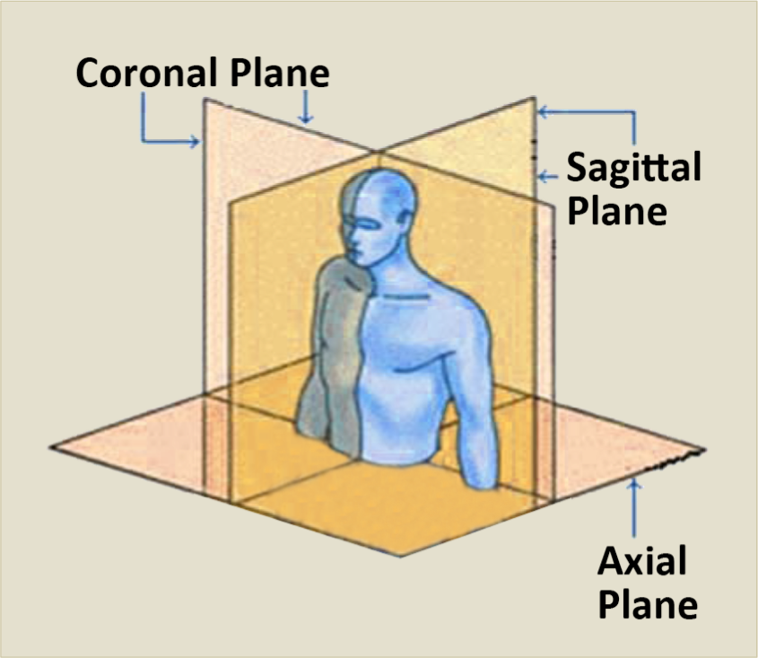
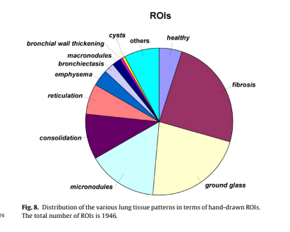
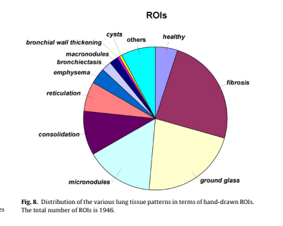
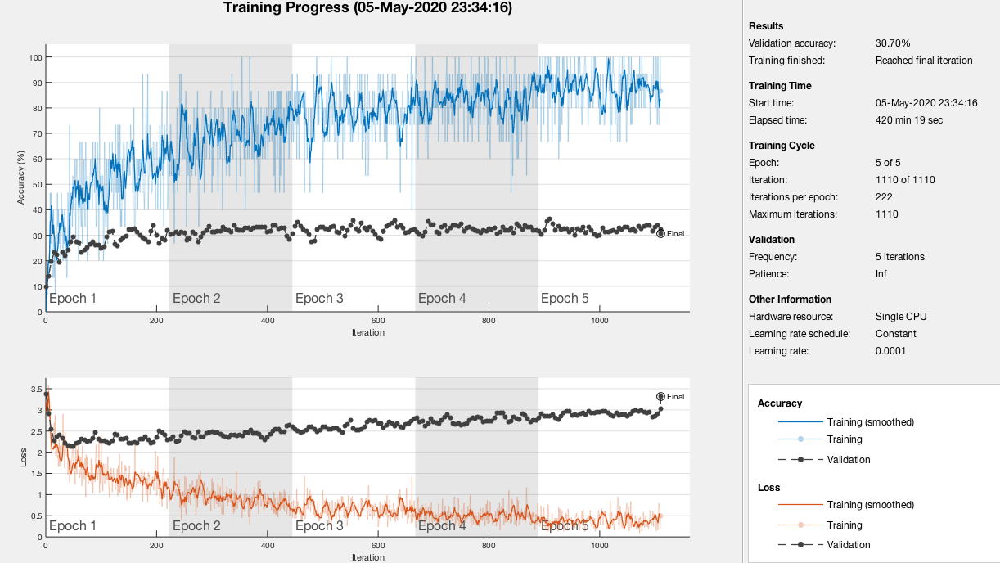
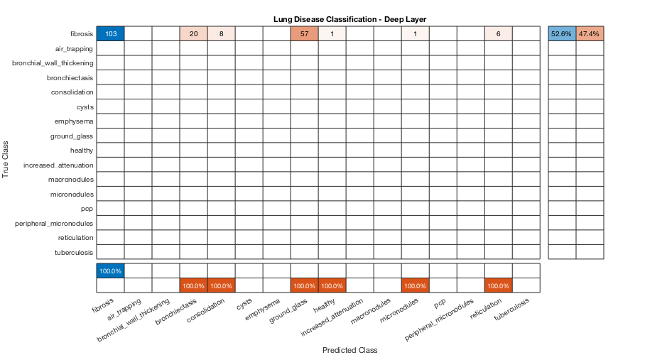
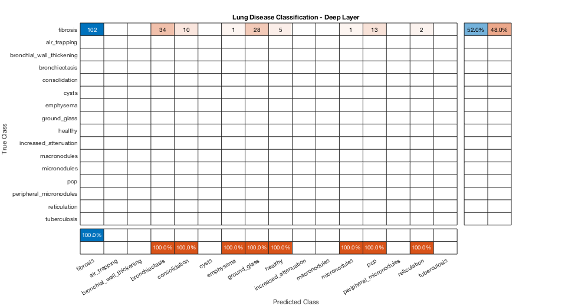
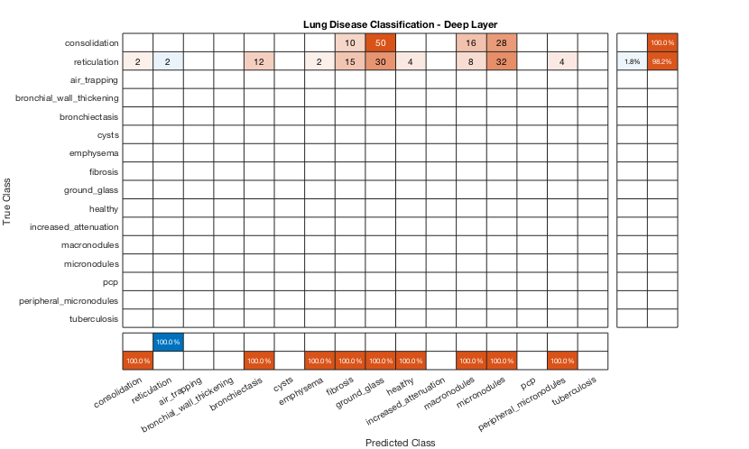

CS 470: ILD Classification Using 2D/2.5D/3D Approaches
A DICOM image slice from a patient with fibrosis. (DICOM images are 512 x 512)
Introduction
Many people around the world suffer from a variety of deadly diseases. A sub-variety of those include
interstital lung diseases. In the United States alone, ~81 per 100,000 men and ~67
per 100,000 women suffer from interstitial lung disease, with new cases every year. In more recent current events, doctors
are using CT scans, on top of the limited amount of testing available, to diagnose and view the damage
the Coronavirus causes to the patient's lungs.
Our main goal was to classify a 2D lung slice or a 2.5D/3D lung volume with the correct disease using a convolutional
neural network (CNN).
We first had to get enough data of lung images. Luckily, we had a promising dataset, a multimedia collection of cases with interstitial
lung diseases (ILDs) at the University Hospitals of Geneva. These included High-resolution computed tomography (HRCT)
"image series with three-dimensional annotated regions of pathological lung tissue along with clinical parameters
from patients with pathologically proven diagnoses of ILDs." A total of 128 patients, each affected with one or more
of the 13 diagnoses of ILDs, and each with their own CT scan volume. The CT scan volume consisted of a number of slices,
usually 28 -> 50, each 512 x 512 pixels. The above figure to the right is an example of one slice from a patient's CT scan.
That patient is diagnosed with fibrosis. We still needed more data which we will be discussed below on how we created more.
Approaches/Algorithms
Our step by step process can be simplified into these steps:
- Obtain the data and augment it
- Seperate the data into training and testing (Leave One Patient Out)
- Choose a network.
- Train the data using transfer learing or feature extraction
- Get results and discuss
2D
The 2D method of analyzing lung data was built to compare with that of the ideas in 2.5D and 3D. It was setup with a basic idea of using flat images to train and test on, two options considered were using the smaller patches generated by given mat lab code as well as entire scanned slices of the lungs. Using the axial images of the data created below, data was organized by disease and labeled with each patient. Minor diseases that did not have at least 2-3 patients were removed from the dataset as we chose not to test on patients we trained on. Testing with 2D was taken from 10-13 classes to justify the amount of data involved. Several networks were tested on including googlenet, alexnet, and resnet.
2.5
Creating the Data
We had two main ways of creating the 2.5D data. The first way was to get a 512 x 512 slice that had a region of interest (ROI) marked and labeled, and create a volume using the slice above and the slice below. If there was no above or below slice, we simply just duplicated the center slice. The first way created a 512 x 512 x 3 volume. The other way involved the use of 3 orthogonal views. We first get a 512 x 512 slice with a ROI, this is our axial view. We then get the sagittal and coronal view based on the center of that ROI. For the sagittal and coronal views, we used the whole depth of the volume. We used different sizes of images with the ROI in the center. Sizes included 512, 64, and 32. So the second way created a SIZE x SIZE for axial, SIZE x DEPTH for sagittal, and DEPTH x SIZE for coronal. The left figure below shows a sample slice. The top right of that figure is the axial view with the ROI in the center. The sagittal view is the bottom left, and the coronal view is bottom right. SIZE option was 64. The other figure on the right shows what the axial, sagittal, and coronal views are.
Some issues with the first method was that some patients had more than 1 disease on each slice. This meant that they were trained with the same data but different label. Another issue was that it is not ROI focused, meaning it does not use just the ROI, which has the data we are most interested in.
The issue with the second method was that there was not enough depth per patient. Most of the patients had around 30 slices, with only 5 patients having the max amount which was 50. In order to combine the 3 views into one image, they had to be the same dimensions. So we either had to a) resize down the axial view to match the other two, or b) resize up the coronal and sagittal to matcht the axial. By resizing the axial slice down, we lose some data. Since the axial slice is the most important one, we need to keep it the same size. The figure below shows the difference between a 64 x 64 axial view and its resized verison of DEPTH 28 x 64.
Now we need to create more data. We can do this by rotating the original and new images 90, -90, and 180 deg. We can also duplicate some images, flip/mirror the images, and translate/shift the images
Classification
For classification, we used MATLAB. The first method we tried was transfer learning with the pre-trained neural network Resnet 18. Resnet 18 takes as input images that are 224 x 224 x 3. We simply replace the last layers with the number of classes we have, in this case the number of diseases we have. This method was really slow on Juan's MacBookAir, so we decided to stick our second method which was extracting image features using a pre-train network, and using those features, to train an image classifier. In this case our image classifier was a support vector machine. We can then extract image features from a deep or shallow layer. We only got to test a deep layer. This method is much faster.
The easiest way to input sets of images, in MATLAB, into a neural network is to use an image datastore. Usually, your images
are already ready to be inputted, however, for each slice that had a ROI, we have a folder and inside it is the 3 orthogonal views we use.
Using these folders, we had to create a .mat file for each folder. The .mat file is simply just a struct that just contained the names
of the files for which we will create the final image.
The directory structure of the images. These are the original amount,
64 in size,
and each sub directory of each disease is the patient number,
slice number, and center x and y coordinates
After you have created all the .mat files, the image datastore will need to know that it is looking for
the.mat files. Most importantly you need to specify a user defined read function; this function is the function that
the image datastore will use to read the files and input them into the neural network. It simply returns the final image we need.
% code to create the .mat file
matFileDir = "orthogonal_ROI_64_mat_format_same_amount_rotated"; % destination folder
parentDir = "orthogonal_ROI_64_same_amount_rotated"; % the folder with the images
parentDirSubDir = dir(parentDir);
dirFlags = [parentDirSubDir.isdir];
diseaseSubFolders = parentDirSubDir(dirFlags);
diseaseSubFolders(ismember( {diseaseSubFolders.name},
{'.', '..', '.DS_Store'})) = []; %remove . and .. and DS_Store
for i = 1:numel(diseaseSubFolders)
subDirWithFilesPath = parentDir + "/" + diseaseSubFolders(i).name;
patientsOfSubDir = dir(subDirWithFilesPath);
patientsOfSubDir(ismember( {patientsOfSubDir.name},
{'.', '..', '.DS_Store'})) = []; %remove . and .. and DS_Store
for j = 1:numel(patientsOfSubDir)
patientAndFilesPath = subDirWithFilesPath + "/" + patientsOfSubDir(j).name;
collection = dir(patientAndFilesPath);
collection(ismember( {collection.name},
{'.', '..', '.DS_Store'})) = []; %remove . and .. and DS_Store
matFileName = fullfile(matFileDir, diseaseSubFolders(i).name, patientsOfSubDir(j).name);
save(matFileName,'collection');
end
end
imdsTrain = imageDatastore(trainDir,'IncludeSubfolders',true, 'FileExtensions','.mat', 'LabelSource',
'foldernames', 'ReadFcn', @matReadOrtho);
function data = matReadOrtho(filename)
% this function creates the final image; resizes sagittal and coronal views to be the max size which would be 512, 64, or 32
% final size is SIZE x SIZE by 3
inp = load(filename);
f = fields(inp);
imgFiles = inp.(f{1});
img1 = rgb2gray(imread(fullfile(imgFiles(1).folder, imgFiles(1).name)));
img2 = rgb2gray(imread(fullfile(imgFiles(2).folder, imgFiles(2).name)));
img3 = rgb2gray(imread(fullfile(imgFiles(3).folder, imgFiles(3).name)));
size_1 = size(img1);
maxAll = max(size_1);
img2 = imresize(img2, [maxAll maxAll]);
img3 = imresize(img2, [maxAll maxAll]);
data = cat(3, img1, img2, img3);
end
These are the different variations we did:
- Size 32, original amount of data
- Size 32, original amount of data and rotated
- Size 64, original amount of data
- Size 64, original amount of data and rotated
- Size 64, same amount of data and rotated
- Size 512, original amount of data
- Size 512, original amount of data and rotated
- Size 512, same amount of data and rotated
3D
The 3D method was an experiment we had hoped to be the core of our project, however given that there were less than 200 patients for this experiment, many with conflicting diseases, it would difficult to get a grasp on how to increase the dataset for the number of entries per disease.
Results
2D
The results of the 2D method were generated below. As seen in the distribution, Fibrosis is clearly a larger amount, this is given that it contains the most amount of data (without over/undersampling it was ~400 in size compared to many other diseases that were less than 100). The accuracy seen at the top is what was obtained from these experiments. A range of around 18% - 35% was reached during these variations of hyper parameter and network arrangements, likely due to the overfitting of our model with the data.

 

2.5D
For transfer learning, our model overfits our data. This means it performs well on the training data but does not perform well on the evaluation data. This can happen when a model learns the detail and noise in the training data to the extent that it negatively impacts the performance of the model on new data. Here we tested on one patient that was not part of the training set using slices above and below.
There are a bunch of parameters to play around with but this run alone took 7 hours to complete. That prompted us to shift our focus to feature extraction. This method was faster, with the longest taking 2 hours.
We first trained on 512 sized images, and with each disease having around the same amount of data, and rotated. Below we tested on patients 3, 184, and 185 who all have fibrosis on their ROI within the slice. The accuracy was 0.648 and our F-score was 0.7864.
Then we switched to size 64, and performed a little worse. We still tested on the same patients. The accuracy was 0.5204 and our F-score was 0.6846
Size 32 did no better than size 64 and no worse than size 512. However, we still needed to test other diseases and patients because fibrosis, what the previous tested patients had, had the most original and unique data. The figure below is when we tested patient 181, who had both consolidation and reticulation but not both on the same slices. Consolidation and reticulation had the 4th and 5th highest amount of original data. This was still tested on the same amount of data for each disease and size 512.
Conclusions
We believe that due to either a miscalculation in the separation of data, or in general a lack of patients to use for data in our experiment, may have led to lower results in our accuracy. Some solutions, aside from obtaining more patient's lung scans for this experiment, would have to involve more augmentation of slices and images. Rather than just rotations and transposing of images, cropping and altering with noise may have given us a larger pool of data.
For future work, one thing we can do is chnage the pixel mapping. DICOM images use the Houndsfield scale for pixel values,
and these are in the range from ~-1000 to ~1000. Since we are using RGB images, we have to map those 2000 values to a range of 0 to 255.
Since we used python to augment the data, there could have been a potential lost of pixel data. We used matplot.imsave
and color map gray to save the images.We did change the parameters for color scaling to be the min and max of the original DICOM
pixel values. Dr. Gill and a previous team created a function that creates a RGB image from the DICOM pixel values. We then we would have to
convert to a gray scale image. An example is shown below (left) and the images we used (right) from our python scripts. *Not the same slice, same patient.
References
- 3D Convolutional Neural Network for Automatic Detection of Lung Nodules in Chest CT
- The Compact 3D Convolutional Neural Network for Medical Images
- Classification of Pulmonary CT Images by Using Hybrid 3D-Deep Convolutional Neural Network Architecture
- Emphysema Classification Using a Multi-View Convolutional Network
- Holistic Classification of CT Attenuation Patterns for Interstitial Lung Diseases via Deep Convolutional Neural Networks
- Classifcation of Interstitial Lung Abnormality Patterns with an Ensemble of Deep Convolutional Neural Networks